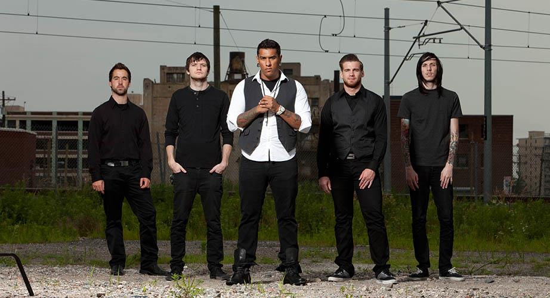

For Today foi uma banda americana de metalcore cristão formada em 2005 em Sioux City, Iowa. A formação original era composta pelo guitarrista solo Ryan Leitru, o guitarrista base Mike Reynolds, o baixista Jon Lauters e o baterista David Morrison. Logo após a formação, Lauters saiu e foi substituído por Brennan Schaeuble, que também saiu logo depois, levando o irmão de Ryan, Brandon Leitru, a assumir as funções de baixista. Em 2007, o vocalista original Matt Tyler deixou a banda, e Mattie Montgomery, ex-integrante do Besieged, assumiu como a nova vocalista principal.
A banda lançou seu EP de estreia, Your Moment, Your Life, Your Time, de forma independente, em 2006. O primeiro álbum completo deles, Ekklesia, foi lançado em 1º de abril de 2008, pela Facedown Records. Em seguida, Portraits em 2009, alcançou a 15ª posição na parada Billboard Christian Albums. Breaker, o terceiro álbum deles, foi lançado em 2010, consolidando ainda mais sua presença na cena metalcore.
Em 2012, For Today assinou com a Razor & Tie e lançou Immortal, que alcançou a 15ª posição na parada Billboard 200. A banda passou por mudanças de formação nesse período; o baterista David Morrison saiu em junho de 2012 para seguir trabalho missionário na América do Sul, sendo substituído por David Puckett. No início de 2013, o guitarrista rítmico Mike Reynolds saiu para frequentar a faculdade bíblica, após comentários polêmicos que fez nas redes sociais. Ele foi sucedido por Sam Penner, ex-integrante do In the Midst of Lions.
A banda lançou o EP Prevailer em 2013, com músicas novas, uma faixa acústica e um DVD documental. O quinto álbum de estúdio deles, Fight the Silence, foi lançado em 2014, abordando questões sociais como o tráfico de pessoas. Em 2015, eles assinaram com a Nuclear Blast e lançaram seu último álbum, Wake, que apresentou um som amadurecido e profundidade lírica.
Em 5 de julho de 2016, o For Today anunciou sua decisão de se separar após uma turnê de despedida. A última apresentação deles aconteceu em 18 de dezembro de 2016, em Dallas, Texas. Após o desfecho, Ryan e Brandon Leitru formaram uma nova banda, Nothing Left, continuando suas atividades musicais.
Ao longo de sua carreira, o For Today era conhecido por sua agenda incansável de turnês, realizando mais de 1.000 shows em cinco continentes. A música deles era caracterizada por uma mistura de metal influenciado pelo hardcore com varridas e breakdowns melódicos, tudo enfatizado por letras espiritualmente movidas que refletiam sua fé cristã.
A discografia da banda inclui seis álbuns completos e dois EPs, cada um contribuindo para sua reputação como uma força significativa tanto na cena cristã quanto na mainstream do metalcore.
Musica favorita: My Confession